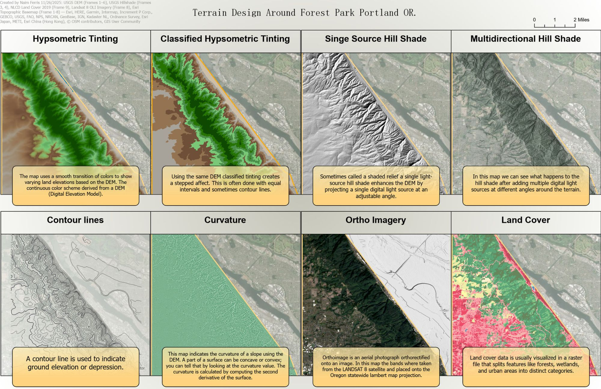
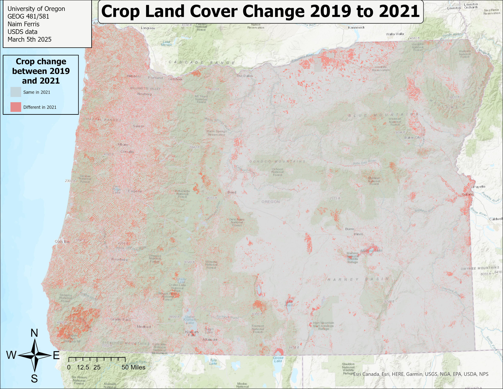
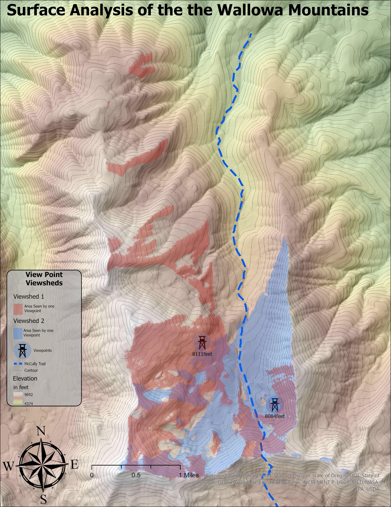
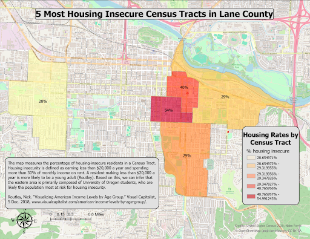
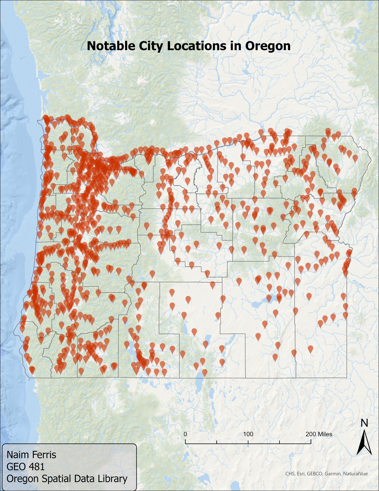
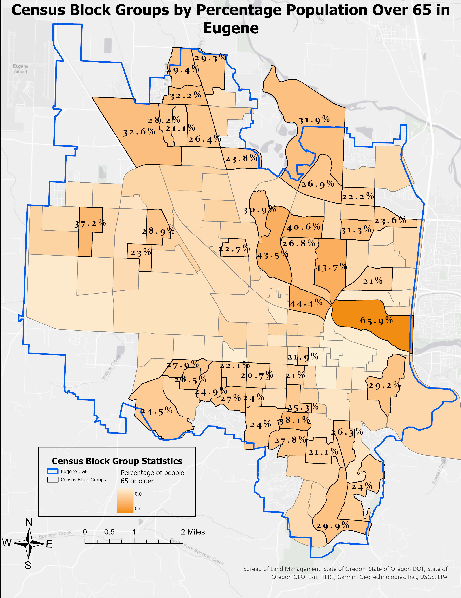
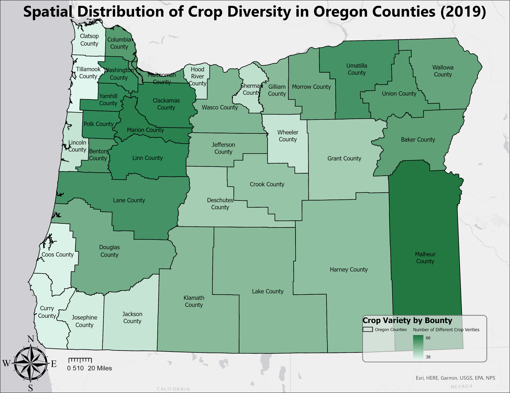
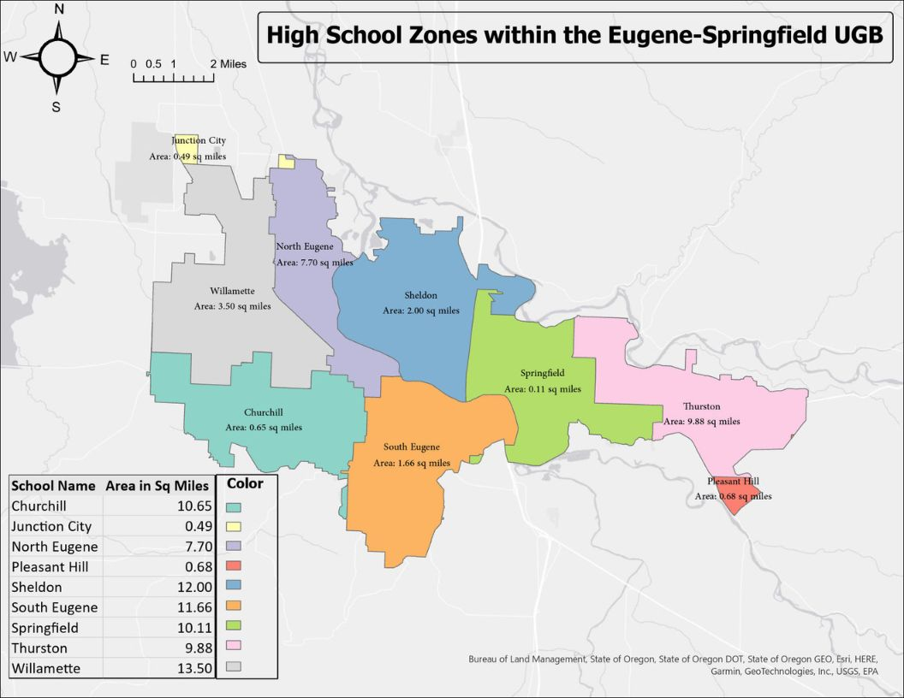
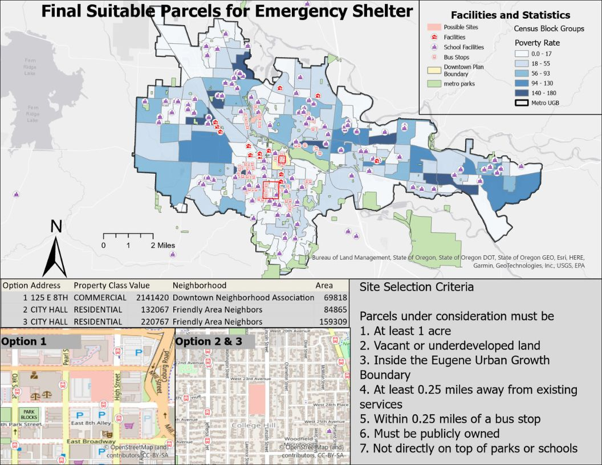

This map was made in Data Driven Cartography at UO. The assignment was to create a reference map at 3 different scales adjusting symbology for each. By combining data from different sources we are able to add roads, hillshade and water features adding layers as the maps zoom in.

This map was made in Data Driven Cartography at UO. The map combines Ortho Imagery with hydrometric Tinting, and Hill Shade to create an appealing looking map.

This map was made in Data Driven Cartography at UO. The assignment was to show different terrain symbology and applying them to the natural feature of our choice. I decided to clip Forest Park in Portland.

This map was made in Data Driven Cartography at UO. The Assignment was to come up with 4 unique symbology for Census Population Data

This assignment focused on creating shared classification schemes across map frames. By comparing county and census tract level data, it demonstrates the Modifiable Areal Unit Problem, where results change depending on the scale of geographic aggregation.

This map was made in GIScience 1 at UO. The assignment used USDA crop cover raster data to examine changes between 2019 and 2021. It helped me advance my raster analysis skills.

Created in 2025 for UO’s Urban Geographic Information Systems class. We were asked to highlight all UGBs and rivers in Lane County, especially the McKenzie and Willamette Rivers in Eugene.

Made in GIScience 1 (2025). The assignment used DEMs to create a hillshade, and we used slope and aspect to find visible areas and suitable habitat from two viewpoints.

Created in 2025 for Urban GIS. The project involved pulling data from the US Census website to identify areas with high housing insecurity in Eugene.

A simple GIScience 1 map using Oregon Spatial Data Library data to show city locations.

Made for GIScience 1. Involved joining multiple tables to separate variables, and using Arcade code in the label symbology screen to customize labels.

Created for Urban GIS at UO. We created new fields to calculate per capita values and mapped elderly population density.

Made for GIScience (2025). Required the use of the domain tool, zonal operations, raster calculator, and exporting data to Excel for further analysis.


Map made for Urban GIS. Involved calculating geometry and editing attributes to find the area of each high school zone.

Final project for Urban GIS. Combined attribute joins, spatial joins, buffers, and filters to identify three suitable emergency shelter sites within Eugene.